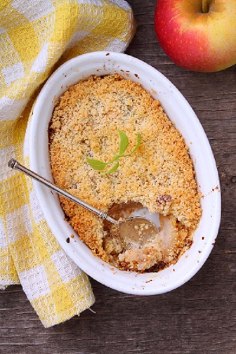

Crumble de manzana

El Crumble de Manzana es uno de esos postres reconfortantes que te hace sentir cálido y confuso. Y este Crumble Vegano de Manzana cumple todos los requisitos, una capa de manzanas dulces y una cubierta espesa de crumble dorado con grumos de avena con sabor a galletitas de mantequilla, pero sin necesidad de mantequilla.
Ingredientes
Rinde 4 porciones | Tiempo de preparación: 20 minutos | Tiempo de cocción: 25 minutos
- 4 manzanas granny smith medianas, peladas y cortadas en rodajas
- 1 cucharada de azúcar
- 1 cucharadita de canela molida
- 1 cucharadita de extracto de vainilla
- 1 cucharada de jugo de limón
- 1/4 taza de agua agua
- 3/4 taza de avena arrollada (puede usar avena arrollada GF)
- 3/4 taza de harina
- 3 cucharadas de aceite de coco
- 2 cucharadas de jarabe
- pizca de sal
Método
- Precalenta el horno a 180°C
- En una olla a fuego medio-bajo, coloca las manzanas rebanadas junto con el azúcar, la mitad de la canela canela, el extracto de vainilla, el jugo de limón y el agua. Guisa las manzanas hasta que se haya evaporado todo el líquido (alrededor de 15 minutos). Las manzanas deben estar tiernas pero aún deben mantener su forma.
- Mientras se cocinan las manzanas, combina los copos de avena, la harina, el resto de la canela, el aceite de coco, el jarabe y la sal en un bowl con las manos, hasta que la mezcla se desmorone.
- Ahora coloca las manzanas guisadas en el fondo de un molde para tarta. Coloca la mezcla del crumble sobre la parte superior, distribuyéndola uniformemente sobre las manzanas.
- Hornea durante 20-25 minutos, hasta que el crumble esté delicioso y dorado.
- Deja que el crumble de manzana se enfríe durante 25 minutos antes de servirlo con yogur de coco o helado vegano.